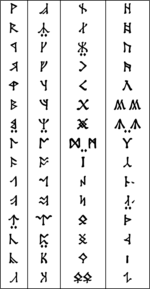

Biografia:

J. R. R. Tolkien (1892-1973) foi um escritor, filólogo e professor universitário inglês, autor de Senhor dos Anéis e Hobbit, verdadeiros clássicos da literatura fantástica. Em 1972 foi nomeado Comandante da Ordem do Império Britânico pela Rainha Elizabeth II.
John Ronald Reuel Tolkien, conhecido como J. R. R. Tolkien, nasceu em Bloemfontein, África do Sul, no dia 3 de janeiro de 1892. Filho do inglês Arthur Tolkien, bancário que trabalhava no Bank of África, e de Mabel Suffield Tolkien, viveu na África do Sul até a morte de seu pai em 1896, ano em que se mudou com sua mãe e seu irmão para a cidade de Birminghan, na Inglaterra. A conversão de sua mãe da Igreja Anglicana para o catolicismo lhe marcou profundamente, tornando-se também um católico fervoroso. Em 1908 ingressou no Exeter College, da Universidade de Oxford e logo mostrou interesse pela filologia e por antigas sagas e lendas nórdicas.
Em 1904, após a morte de sua mãe, Tolkien e seu irmão foram entregues aos cuidados do padre jesuíta Francis Xavier Morgan que Tolkien mais tarde o descreveu como um segundo pai. Especializou-se em línguas Anglo-Saxônicas, língua alemã e literatura clássica na Universidade de Oxford. Em 1914 alistou-se no Lancashire Fusilieres. Em 1916 casou-se com Edith Bratt. Depois de servir na Primeira Guerra Mundial, continuou seus estudos de Linguística na Universidade de Leeds. Entre 1925 e 1945 lecionou língua e literatura anglo-saxônica na Universidade de Oxford, quando se especializou em literatura medieval.
Depois de publicar os ensaios “Sir Gawain e o Cavaleiro Verde” (1925) e “Beowulf” (1936), iniciou a criação de um personagem mitológico inspirado em uma saga épica medieval, repleta de elementos fantásticos e de seres e mundos imaginários. A novela denominada “Hobbit” (1937) escrita para crianças, narra as aventuras de um povo pacato e sensato que vive na mítica “Terra Média”, junto com elfos, duendes e magos.
O livro Hobbit foi o ponto de partida para um ambicioso ciclo épico que se concretizou com a trilogia de “O Senhor dos Anéis” (1954-1955), dividida em três volumes: “A Sociedade dos Anéis” (1954), “As Duas Torres” (1954) e “O Retorno do Rei” (1955). Ao contrário do Hobbit, O Senhor dos anéis é um livro escrito para adultos. O eixo principal da história se constitui em uma oposição entre o bem e o mal. A obra recebeu grande acolhida na década de 60 e se converteu em um livro cultuado pelos leitores.
A atividade de J. R. R. Tolkien como novelista é inseparável da de filólogo. Sua paixão por línguas antigas, como o grego, o anglo-saxão, o inglês medieval, o galês, o gótico, o finlandês, o islandês e o norueguês antigos, o levaram a criar sons e inventar uma linguagem, seguindo um método rigorosamente filológico. Em Senhor dos Anéis, Tolkien criou um reino de fantasia cujos habitantes são os hobbits, seres pequenos que possuem uma língua própria com uma gramática perfeitamente desenvolvida.
J. R. R. Tolkien faleceu em Bournemouyh, Inglaterra, no dia 2 de setembro de 1973.
A obra de J. R. R. Tolkien foi adaptada e levada para o cinema sob a direção de Peter Jackson, na trilogia: O Senhor dos Anéis (2001), As Duas Torres (2002) e O Retorno do Rei (2003), e O Hobbit – Uma jornada Inesperada (2012).
Exímio linguista
Tolkien era um homem apaixonado por idiomas. Quando criança se encantava com nomes galeses que via nos caminhões de carvão. Com suas primas aprendeu rapidamente uma língua artificial e bem simples criadas pelas garotas, chamada Animálico, com base nos nomes de animais. Juntos criaram outra língua, uma mistura de vários outros idiomas. Chamava-se Nevbosh, traduzido como Novo Disparate. Mais tarde criou o Naffarin, mais complexa e baseada na língua de seu tutor padre Francis Morgan: o espanhol.

Alfabeto rúnico criado por Tolkien, chamado Angerthas ou Cirth.
Tolkien, em dezembro de 1910, tornou-se aluno do curso de literatura clássica na Universidade de Oxford, onde obteve uma bolsa de estudos do Exeter College, mas desinteressou-se por este curso e começou a gastar mais tempo no estudos de filologia, sendo orientado por Joseph Wright, um dos grandes pesquisadores britânicos desta ciência e grande conhecedor do tronco linguístico indo-europeu. Pediu transferência para a Honour School of English Language and Literature, onde teve um notável melhoria de notas, devido ao seu interesse pela filologia germânica.
O primeiro artigo da Declaração dos Direitos Humanos escrita nos caracteres Fëanorianos: as Tengwar. Desde criança já tinha conhecimentos de línguas clássicas como grego e o latim, e mais tarde com o espanhol. Sempre achou o italiano muito elegante e, é claro, o inglês e o anglo-saxão o fascinavam. O francês não o cativava tanto, apesar de ser (como ainda é) aclamada como uma belíssima língua. Quando se deparou com a língua finlandesa ele se encantou, e usou a sua gramática, juntamente com a galesa, como base para as línguas que mais tarde apareceriam em seus livros, pois são línguas de gramática complexa e vasto vocabulário. Línguas que seriam estudadas a fundo por muitos de seus fãs: o Quenya, cujo exemplo máximo é expressado pelo poema Namárië, e o Sindarin, este último baseado no galês, as Línguas Élficas, todas movidas pelo som bonito (eufonia) e pela estética, como o "Repicar dos sinos" dizia ele.
Foi baseado nestas línguas que Tolkien começou a desenvolver o seu mundo. Para ele, primeiro vinha a palavra, depois a história. A composição para ele não era um passatempo (como foi 'acusado' na época), mas um trabalho filológico. Ele criou um mundo onde suas línguas pudessem ser faladas, e lendas para rodeá-las. Tolkien, consciente da língua como um organismo mutável, totalmente relacionado com as histórias de um povo, afirmou certa vez que "o Volapuque, Esperanto, o Ido, o Novial, são línguas mortas, mais mortas do que antigas línguas sem uso, porque seus inventores jamais criaram lendas para acompanhá-las."Mais tarde afirmou num artigo sobre filologia: "meu conselho a todos que dispõem de tempo ou inclinação a se ocuparem com o movimento por uma língua internacional, seria: "Apoiem lealmente o Esperanto".
O primeiro artigo da Declaração dos Direitos Humanos escrita nos caracteres Fëanorianos: as Tengwar.
Criou várias outras línguas (como o Khûzdul e o Valarin), mas nenhuma tão elaborada quanto as duas élficas. Também desenvolveu alguns sistemas de escrita, as Angerthas (ou runas) e as Tengwar. Acreditava que uma língua bonita devia ter também um alfabeto elegante. Além do inglês, Tolkien conhecia cerca de dezesseis outros idiomas (à excepção dos criados por ele mesmo) que eram os seguintes: grego antigo, latim, gótico, islandês antigo, sueco, norueguês, dinamarquês, anglo-saxão, médio inglês, alemão, neerlandês, francês, espanhol, italiano, galês e finlandês.
Quando O Hobbit foi traduzido para o islandês, Tolkien ficou encantado, porque, além de esta ser uma de suas línguas favoritas, ele achava que o livro combinaria muito com ela. Muitos nomes, como Gandalf, foram retirados do antigo islandês. Na época, o próprio Tolkien se ofereceu para fazer a tradução, ou ao menos supervisioná-la, quando sua obra foi publicada na Islândia pela primeira vez na língua local.
Legado
Apesar de ter dado início em 1937 com O Hobbit, o livro infanto-juvenil, foi somente após o lançamento da trilogia de "O Senhor dos Anéis" (1954-1955) que Tolkien passou a ser conceituado por milhões de fãs. Em 1996, uma pesquisa feita pela livraria londrina Waterstone's, que conta com mais de 200 lojas em toda Grã-Bretanha, em parceria com o canal de televisão Channel 4, elegeu O Senhor dos Anéis como o melhor livro do século e O Hobbit entre os vinte melhores.[29] Uma outra pesquisa mais recente, datada de 2003, feita pela BBC, perguntando às pessoas qual o livro favorito delas, "O Senhor dos Anéis" ficou em primeiro, e "O Hobbit" em vigésimo quinto.[30] Foram vendidos mais de 50 milhões de exemplares em vários países, traduzido para 34 idiomas, juntamente com legiões de fãs que se dedicam a ler e estudar a obra do autor.
O mundo artístico também foi muito influenciado por Tolkien. O cinema (principalmente a trilogia "O Senhor dos Anéis"), a música, o RPG (liderado pelo D&D), os desenhos animados, a literatura, as histórias em quadrinhos, os jogos de computador e até mesmo a Internet, com milhares de websites dedicados a sua obra sofreram inúmeras influências do escritor freqüentemente aclamado como o maior autor do século XX em pesquisas de opinião.
John Ronald Reuel Tolkien foi membro da direção do New English Dictionary (1918-1920), professor de Língua Inglesa na Universidade de Leeds, na cátedra Rawlinson & Bosworth, posto ligado à Faculdade Pembroke (em Oxford) (1920-1925), professor de anglo-saxão (inglês arcaico) em Oxford (1925-1945) e professor de Língua e Literatura Inglesa em Merton (1945-1959), o que caracteriza um jeito próprio de lidar com os livros e a mitologia sempre presente em seus livros.
Mesmo com o sucesso de "O Senhor dos Anéis", Tolkien só se tornou uma celebridade por volta da década de 1960, especialmente nos campi das universidades.
Estes fãs tiveram a mesma importância que os trekkers em Star Trek, os "star warriors" em Star Wars e os "excers" em Arquivo X para tornar a obra de Tolkien conhecida. Desde os encontros da primeira sociedade Tolkien, que se comunicava através de frases em cartazes no metro de Nova York,[carece de fontes] a tolkienmania só cresceu e continua a influenciar muita gente. No auge da contracultura, a obra era considerada uma espécie de bíblia da Sociedade Alternativa.[carece de fontes] Com autocolantes como "Frodo Vive" e "Gandalf para Presidente", os fãs se reuniam para celebrar Tolkien. O público nessa época era composto, quase sempre, por geeks da computação e hippies.
A criação de mundos complexos como a Terra-Média arejaram também a literatura ficcional, além de inaugurar um novo gênero literário, a literatura fantástica, algo de que Tolkien sentia falta na literatura. Muitos autores também criaram os seus mundos próprios e essa realidade virtual criada por Tolkien foi o elemento-chave para a ficção científica de Duna (de Frank Herbert), para a fantasia de A Cor da Magia (de Terry Pratchett).
Talvez até para o universo de Harry Potter de J. K. Rowling, tenha servido de base, apesar de Rowling gostar muito da obra tolkieniana, ter declarado:
“ Penso que, se deixarmos de lado o fato de que os livros falam de dragões, varinhas mágicas e magos, os livros de Harry Potter são muito diferentes, especialmente no tom. Tolkien criou toda uma mitologia. Não penso que alguém possa dizer que eu tenha feito isso.”
Além disso, o autor David Colbert escreveu em seu livro "O Mundo Mágico do Senhor dos Anéis":
“ Muitas pessoas tentam comparar J. R. R. Tolkien e J. K. Rowling só porque ambos contam histórias sobre mundos imaginários habitados por magos. Não há muita coisa semelhante entre suas histórias.”
Em 1974, Gary Gygax e Dave Anderson arranjaram uma maneira de interagir com esta realidade e criaram o Role-Playing Game (RPG) Dungeons & Dragons, um jogo de personificações com temas fantásticos, inspirados na Terra-Média de Tolkien. Com o RPG foi possível se aventurar no universo de orcs, anões, elfos, dragões e até os hobbits, os Halflings do D&D, que mantêm muitas características dos Hobbits com leves alterações. O RPG serviu de estímulo para o público explorar e conhecer novos mundos. A própria Terra-média chegou a ter seu RPG, o MERP (Middle-Earth Role Playing), em 1982.
Na década de 1970, um hacker fã de Tolkien deu uma ajuda ao programador do arcaico RPG Adventure. O jogo foi transformado, ganhou o nome de Zork e virou hit entre os usuários da Arpanet (embrião da Internet) porque estava cheio de referências ao mundo de Tolkien. Nos primórdios da rede, essas realidades virtuais ganharam uma versão em texto, batizadas de MUD (Multi-User Dungeon/Dimension, que em português soa algo como "Dimensão Multiusuários").
Hoje, graças aos avanços da tecnologia, os MUD caíram em desuso e o que é sucesso são jogos multiplayer como EverQuest, Última Online, Asheron’s Call, Warcraft e Kingdom Under Fire. Todos têm em comum cenários fantásticos e referências às obras de Tolkien. A Internet teve papel importante na propagação dos trabalhos do autor. Através dela foi possível reunir fãs do mundo inteiro, que demonstram sua admiração e discutem a política, sociedade, as línguas, a biologia e a história da Terra-Média. Há milhares de sites dedicados aos trabalhos de Tolkien que trazem ensaios, poemas, fan-fictions (contos de ficção escritos por fãs), sátiras, críticas, notícias, grupos de estudos, de discussão, fóruns e humor.
Ao contrário dos "trekkers" e dos "star warriors" que aprovam e incentivam as sequências das obras originais em livros, filmes, seriados, produtos e Histórias em quadrinhos, os fãs de Tolkien preferem manter seu próprio ponto de vista sobre a obra. Com uma visão muito pessoal e particular da saga de Frodo, os fãs não se arriscam a tocar na Terra-Média. E esse é um dos motivos que impediram uma proliferação ainda maior do legado do autor. A única exceção talvez seja o livro The Black Book of Arda, escrito por duas jovens russas no início dos anos 90, que recontavam os acontecimentos de O Silmarillion, só que do ponto de vista dos vilões.
A influência de Tolkien também pode ser percebida nas mais diversas formas de artes. Pintores como John Howe, Roger Garland, Ted Nasmith, Alan Lee, Tim Kirk e os irmãos Hildebrandt entre outros figuram em enciclopédias ilustradas e centenas de galerias de imagens na Internet. Eles retratam de forma fantástica várias passagens e personagens dos livros.
"Aqui, no fim de todas as coisas..."
Além de O Hobbit e O Senhor dos Anéis, foram publicados Sir Gawain and the Green Knight (1925), Mestre Gil de Ham (1949), As Aventuras de Tom Bombadil (1963), Smith of Wootton Major (1967) e Sobre Histórias de Fadas (1965). O escritor então se aposenta e junto de sua mulher se muda para Bournemouth. Com a morte de sua esposa em 19 de novembro de 1971, após 55 anos de casamento, Tolkien refugiou-se na solidão, em um apartamento na Universidade de Oxford. Numa carta ao seu filho Christopher, Tolkien escreveu sobre a sua esposa Edith Bratt, dizendo que "o cabelo dela era preto e sedoso, a pele clara, os olhos mais brilhantes do que os que vocês viram, e sabia cantar... e dançar. Mas a história estragou-se, e eu fiquei para trás, e não posso suplicar perante o inexorável Mandos."
No texto, Tolkien decide que no epitáfio de Edith estaria escrito "Lúthien", nome de uma personagem de O Silmarillion inspirada na esposa de Tolkien, como afirma o trecho da mesma carta: "é breve e simples [o epitáfio], a não ser por Lúthien, que tem para mim mais significado do que uma imensidão de palavras, pois ela era (e sabia que era) a minha Lúthien [...] Nunca chamei Edith de Lúthien, mas foi ela a fonte da história que, a seu tempo, se tornou parte de O Silmarillion."
Lúthien era elfa, imortal, mas se apaixona por um mortal, Beren. Ela então desiste da sua imortalidade. Ambos enfrentam muito para ficar juntos e, quando ele morre, Lúthien vai até os Palácios de Mandos, o guardião das Casas dos Mortos. Beren a aguardava nos Palácios, e ela canta diante de Mandos que, então, se comove, a única vez em toda sua existência, e permite que ambos voltem, como mortais. E assim foi. No túmulo, abaixo do nome Edith Tolkien está escrito Lúthien, que, nas histórias, é a mais bela das elfas, a mais bela dos Filhos de Ilúvatar. A história dos dois está contada na Balada de Leithian.
Em 1972, J. R. R. Tolkien recebeu o título de Doutor Honoris Causa em Letras da Universidade de Oxford, e conseguiu o seu último e mais importante título: a Ordem do Império Britânico, dada pela Rainha Elizabeth, uma das maiores honras britânicas.
No dia 28 de agosto de 1973, Tolkien sentiu-se mal durante uma festa, e na manhã do outro dia foi internado, com uma úlcera e hemorragia. No sábado descobriu-se que tinha uma infecção no peito. Aos 81 anos de idade, então, nas primeiras horas do domingo de 2 de setembro de 1973, J. R. R. Tolkien morre na Inglaterra. Enterrado junto com a esposa, no Cemitério de Wolvercote, no túmulo feito de granito da Cornualha, abaixo do seu nome há a inscrição Beren
Túmulo de J. R. R. Tolkien e sua esposa no Cemitério de Wolvercote. Nele, as inscrições: Edith Mary Tolkien, Lúthien, 1889-1971. - John Ronald Reuel Tolkien, Beren, 1892-1973.
O obituário escrito no jornal The Sunday Times dizia: "Dois de Setembro de 1973, Londres. J. R. R. Tolkien, linguista, estudioso e autor de sucesso, faleceu hoje em Bournemouth. Ele tinha oitenta e um anos...." Após a sua morte, o seu filho Christopher editou e publicou O Silmarillion em 1977, além de nos anos 80 e anos 90 lançar a série The History Of Middle-Earth, uma gigantesca coletânea dividida em doze volumes, e Unfinished Tales of Númenor and Middle-Earth. Os Filhos de Hurin (ou Os Filhos de Húrin ou Narn i hîn Húrin), lançado em 2007, é seu livro mais recentemente publicado, também baseados em manuscritos do autor J. R. R. Tolkien, seu pai. Em 1992, ano em que Tolkien completaria 100 anos, duas árvores foram plantadas em seu tributo em Oxford pela Tolkien Society e pela Mythopoeic Society, grupos de leitores e estudiosos de sua obra. Essas duas árvores fazem alusão às Duas Árvores de Valinor, que davam luz a Valinor nos Dias Antigos.